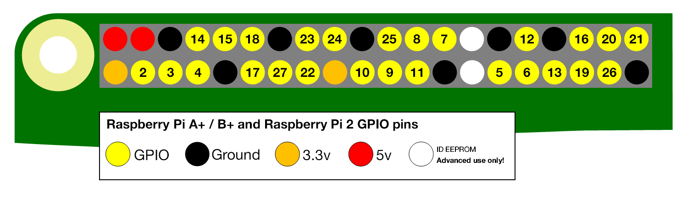
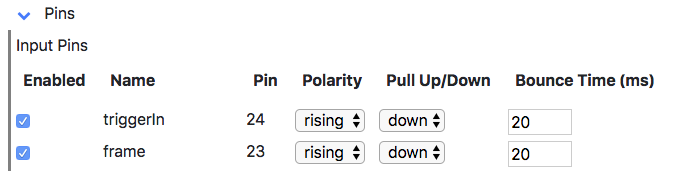
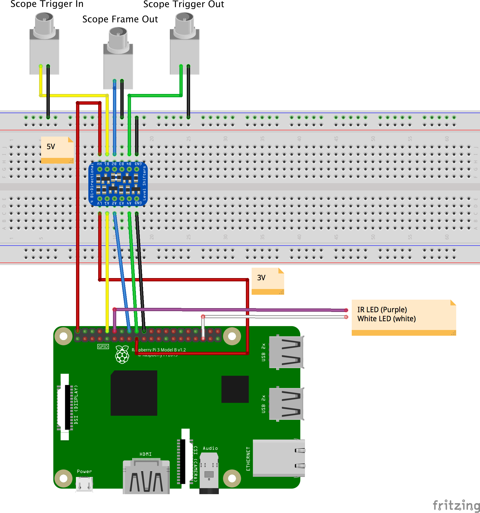

Wiring a scope
This is a tutorial for wiring tactile-push-buttons to trigger a frame and a trigger-in in a PiE server.
This tutorial requires:
- A breadboard.
- Some jumper wires.
- Two tactile push buttons.
- A functioning Raspberry Pi.
- A PiE server to be installed.
Raspberry Pi 3 pin out
Here is a schematic of the Raspberry Pi 2/3 pin outs. Red is 5V, orange is 3.3V, yellow are GPIO, black are Ground, and white should not be used.

Important: The Raspberry Pi GPIO pins are not 5V tolerant. Never connect a 5V line to a Raspberry GPIO pin.
1) Test the PiE server 'frame' pin with a tactile-button-switch
Here, we will wire a tactile-button-switch to the the Raspberry Pi 3.3V line and the PiE frame pin (GPIO 18) to test that pushing the button registers a frame in the PiE server. This button will normally sit at LOW and take on a '3.3V ' level when pushed.
-
1) Wire the Raspberry Pi 3.3V pin to the '+' rail on a breadboard (red).
-
2) Insert a Tactile-button-switch on the breadboard.
-
3) Connect the top-left pin of the Tactile-button-switch to the '+' rail on the breadboard (red).
- 4) Connect the top-right pin of the Tactile-button-switch to the Raspberry Pi
GPIO 23. - 5) The remaining bottom-left and bottom-right pins on the tactile-button-switch should not be connected to anything.
Make sure the PiE server is running with ./pie run so we can see the output in the terminal.
cd ~/pie
./pie stop # stop any background PiE servers
./pie run # run the PiE server on the command line
In the 'Pins' section, configure the triggerIn pin to Polarity 'rising' and Pull Up/Down to 'down'. Do the same for the 'frame' pin.

Make sure 'Allow arming' is checked in the Configure section.
Push the frame tactile-button-switch and you should see see something like this on the command line:
!!! received frame when not running
If you do see this
Good. Your frame pin is working.
If you do not see this
STOP your frame pin is not working. Please check your wiring and try again.
2) Test the PiE server 'trigger-in' pin with a tactile-button-switch
Here, we will wire a tactile-button-switch to the Raspberry Pi 3.3V line and the PiE 'triggerIn' pin (GPIO 23) to test that pushing the button starts a 'trial' in the PiE server. This push-button will normally sit at LOW and take on a '3.3V' level when pushed.
-
1) Wire the Raspberry Pi 3.3V pin to the '+' rail on a breadboard (red).
-
2) Insert a Tactile-button-switch on the breadboard.
-
3) Connect the top-left pin of the Tactile-button-switch to the '+' rail on the breadboard (red).
- 4) Connect the top-right pin of the Tactile-button-switch to the Raspberry Pi
GPIO 24. - 5) The remaining bottom-left and bottom-right pins on the tactile-button-switch should not be connected to anything.
Make sure the PiE server is running with ./pie run so we can see the output in the terminal.
cd ~/pie
./pie stop # stop any background PiE servers
./pie run # run the PiE server on the command line
Make sure 'Allow arming' is checked in the Configure section.
Push the trigger-in tactile-button-switch and you should see something like this on the command line:
!!! received triggerIn_Callback() when camera is NOT armed
If you do see this
Good. Your trigger-in pin is working.
If you do not see this
STOP your trigger-in pin is not working. Please check your wiring and try again.
Once your trigger-in pin and tactile-button-switch are working
Go into the web interface and arm the recording with the arm checkbox.
Push the trigger-in tactile-button-switch and video should start recording and you should see this in the command prompt:
[2018-07-09 08:48:26,556] {bTrial.py startTrial:702} DEBUG - startTrial startArmVideo=True
[2018-07-09 08:48:26,559] {bTrial.py startTrial:721} INFO - triggerOut pin:15 value:True
Then, while the recording is still going, push the frame tactile-button-switch and you should see
[2018-07-09 08:49:08,884] {bTrial.py eventIn_Callback:614} DEBUG - eventIn_Callback() frame 1
[2018-07-09 08:49:09,027] {bTrial.py eventIn_Callback:614} DEBUG - eventIn_Callback() frame 2
[2018-07-09 08:49:09,312] {bTrial.py eventIn_Callback:614} DEBUG - eventIn_Callback() frame 3
Once you done this for awhile, click the disk icon in the top tool-bar and view your videos and trial .txt files. Your videos should be watermarked with frame numbers and the .txt file should log the frame times. You will see two video files per trial, a before and after video. The after video is started when a trial is started, the before video is a 'pre-trigger' video whose length is set with 'Pre Trigger Buffer (sec)'.
3) Connecting triggerIn, triggerOut, and frame pins to a scope.
Following the same logic, we can connect the Raspberry Pi triggerIn to the 'Scope Trigger Out', the Raspberry triggerOut to the 'scope Trigger In', and the Raspberry Pi frame in pin to the 'Scope Frame Out'. Keep in mind that the definition of 'in' versus 'out' is with respect to the device you are talking about.
Important: The Raspberry Pi GPIO pins are not 5V tolerant. Never connect a 5V line to a Raspberry GPIO pin. We use a level-shifter to convert high voltage 5V to 3V.
If your scope sends a rising high pulse for 'trigger out' and 'frame out' you can follow steps #1 and #2 above. If your scope sends a falling low pulse for either of these, you need to configure the 'pins' section of the web interface as polarity falling and Pull Up/Down as up.
Raspberry Pi as the master (Scope is slave)
To have the PiE server trigger your scope (Raspberry Pi is master), use the Raspberry triggerOut pin. In the web interface, if the 'Default Setting' for the triggerOut pin is set to 'false' then the PiE server will hold this pin LOW and send a 'positive' HIGH pulse when you click 'Start Trial'. The opposite is also true, if the 'Default Setting' for the triggerOut pin is set to 'true', the PiE server will hold this pin HIGH and send a LOW pulse when you click 'Start Trial'. You need to figure out what signal your scope is expecting for a trigger, it is either HIGH or LOW.
Raspberry Pi as the slave (Scope is master)
To have your scope trigger the PiE server (Scope is master), use the Raspberry triggerIn pin. In the web interface you 'arm' the Raspberry to 'wait for trigger' using the 'arm' checkbox.
Troubleshooting
If you run into trouble it is best to independently test each component of the system. In this case, you would use a volt-meter to test the signals coming off your scope are what you expect.
Wiring diagram
